19. [Flink源码]YarnApplication模式的任务启动
19.1. 前瞻
上一回从源码层面简单分析了一个Flink任务是如何解析命令行参数，从而以ACTION RUN形式启动一个flink任务的。从flink run脚本接收到参数后，初始化一系列参数，调用parseAndRun(String[] args)方法，通过解析命令行传入的ACTION参数，以此来运行不同的模式(session模式、application模式)，下文将会接着从源码层面尝试分析一个applicantion模式的应用是如何启动的。
下文引用的Flink源码基于Flink 1.17版本
19.2. parseAndRun
我们通常通过以下方式启动提交一个flink on yarn application的任务
./bin/flink run-application -t yarn-application ./examples/streaming/WordCount.jar
正常来说，我们会在命令行得到类似下面这样的日志输出：
[root@prd-cdp-gateway-03 flink-1.15.4]# ./bin/flink run-application \
> -t yarn-application \
> -Djobmanager.memory.process.size=1024m \
> -Dtaskmanager.memory.process.size=1024m \
> -c org.apache.flink.streaming.examples.wordcount.WordCount \
> ./examples/streaming/WordCount.jar
Setting HBASE_CONF_DIR=/etc/hbase/conf because no HBASE_CONF_DIR was set.
SLF4J: Class path contains multiple SLF4J bindings.
SLF4J: Found binding in [jar:file:/path/to/flink/flink-1.15.4/lib/log4j-slf4j-impl-2.17.1.jar!/org/slf4j/impl/StaticLoggerBinder.class]
SLF4J: Found binding in [jar:file:/opt/cloudera/parcels/CDH-7.1.7-1.cdh7.1.7.p2046.46875634/jars/slf4j-reload4j-1.7.36.jar!/org/slf4j/impl/StaticLoggerBinder.class]
SLF4J: See http://www.slf4j.org/codes.html#multiple_bindings for an explanation.
SLF4J: Actual binding is of type [org.apache.logging.slf4j.Log4jLoggerFactory]
2025-03-14 00:06:42,231 INFO org.apache.flink.yarn.cli.FlinkYarnSessionCli [] - Found Yarn properties file under /tmp/.yarn-properties-root.
2025-03-14 00:06:42,231 INFO org.apache.flink.yarn.cli.FlinkYarnSessionCli [] - Found Yarn properties file under /tmp/.yarn-properties-root.
2025-03-14 00:06:42,555 INFO org.apache.hadoop.security.UserGroupInformation [] - Login successful for user template@TEMPLATE.COM using keytab file /root/keytabs/template.keytab. Keytab auto renewal enabled : false
2025-03-14 00:06:42,591 WARN org.apache.flink.yarn.configuration.YarnLogConfigUtil [] - The configuration directory ('/path/to/flink/flink-1.15.4/conf') already contains a LOG4J config file.If you want to use logback, then please delete or rename the log configuration file.
2025-03-14 00:06:42,880 INFO org.apache.flink.yarn.YarnClusterDescriptor [] - No path for the flink jar passed. Using the location of class org.apache.flink.yarn.YarnClusterDescriptor to locate the jar
2025-03-14 00:06:43,052 INFO org.apache.hadoop.conf.Configuration [] - resource-types.xml not found
2025-03-14 00:06:43,053 INFO org.apache.hadoop.yarn.util.resource.ResourceUtils [] - Unable to find 'resource-types.xml'.
2025-03-14 00:06:43,061 WARN org.apache.flink.yarn.YarnClusterDescriptor [] - Neither the HADOOP_CONF_DIR nor the YARN_CONF_DIR environment variable is set. The Flink YARN Client needs one of these to be set to properly load the Hadoop configuration for accessing YARN.
2025-03-14 00:06:43,181 WARN org.apache.flink.yarn.YarnClusterDescriptor [] - The specified queue ......
2025-03-14 00:06:43,198 INFO org.apache.flink.yarn.YarnClusterDescriptor [] - Cluster specification: ClusterSpecification{masterMemoryMB=1024, taskManagerMemoryMB=1024, slotsPerTaskManager=1}
2025-03-14 00:06:56,893 INFO org.apache.flink.yarn.YarnClusterDescriptor [] - Adding KRB5 configuration /etc/krb5.conf to the AM container local resource bucket
2025-03-14 00:06:56,916 INFO org.apache.flink.yarn.YarnClusterDescriptor [] - Adding keytab /root/keytabs/template.keytab to the AM container local resource bucket
2025-03-14 00:06:56,943 INFO org.apache.flink.yarn.YarnClusterDescriptor [] - Adding delegation token to the AM container.
2025-03-14 00:06:56,944 INFO org.apache.flink.yarn.Utils [] - Obtaining delegation tokens for HDFS and HBase.
2025-03-14 00:06:56,955 INFO org.apache.hadoop.hdfs.DFSClient [] - Created token for scb: HDFS_DELEGATION_TOKEN owner=template@TEMPLATE.COM, renewer=yarn/bigdata-08.com@TEMPLATE.COM, realUser=, issueDate=1741882016949, maxDate=1742486816949, sequenceNumber=0, masterKeyId=0 on hadoop001.com:8020
2025-03-14 00:06:56,985 INFO org.apache.hadoop.mapreduce.security.TokenCache [] - Got dt for hdfs://hadoop001.com:8020; Kind: HDFS_DELEGATION_TOKEN, Service: hadoop001.com:8020, Ident: (token for template: HDFS_DELEGATION_TOKEN owner=template@TEMPLATE.COM, renewer=yarn/bigdata-08.com@TEMPLATE.COM, realUser=, issueDate=1741882016949, maxDate=1742486816949, sequenceNumber=0, masterKeyId=0)
2025-03-14 00:06:56,985 INFO org.apache.flink.yarn.Utils [] - Attempting to obtain Kerberos security token for HBase
2025-03-14 00:06:56,986 INFO org.apache.flink.yarn.Utils [] - HBase is not available (not packaged with this application): ClassNotFoundException : "org.apache.hadoop.hbase.HBaseConfiguration".
2025-03-14 00:06:56,992 INFO org.apache.flink.yarn.YarnClusterDescriptor [] - Submitting application master application_1731047694332_1842988
2025-03-14 00:06:57,228 INFO org.apache.hadoop.yarn.client.api.impl.YarnClientImpl [] - Submitted application application_1731047694332_1842988
2025-03-14 00:06:57,228 INFO org.apache.flink.yarn.YarnClusterDescriptor [] - Waiting for the cluster to be allocated
2025-03-14 00:06:57,231 INFO org.apache.flink.yarn.YarnClusterDescriptor [] - Deploying cluster, current state ACCEPTED
2025-03-14 00:07:16,125 INFO org.apache.flink.yarn.YarnClusterDescriptor [] - YARN application has been deployed successfully.
2025-03-14 00:07:16,127 INFO org.apache.flink.yarn.YarnClusterDescriptor [] - Found Web Interface bigdata-34.com:34417 of application 'application_1731047694332_1842988'.
[root@prd-cdp-gateway-03 flink-1.15.4]#
提交命令背后所对应源码在org.apache.flink.client.cli.CliFrontend#parseAndRun
public int parseAndRun(String[] args) {
// check for action
if (args.length < 1) {
CliFrontendParser.printHelp(customCommandLines);
System.out.println("Please specify an action.");
return 1;
}
// get action
String action = args[0];
// remove action from parameters
final String[] params = Arrays.copyOfRange(args, 1, args.length);
try {
// do action
switch (action) {
case ACTION_RUN:
run(params);
return 0;
case ACTION_RUN_APPLICATION:
runApplication(params);
return 0;
case ACTION_LIST:
list(params);
return 0;
case ACTION_INFO:
info(params);
return 0;
case ACTION_CANCEL:
cancel(params);
return 0;
case ACTION_STOP:
stop(params);
return 0;
case ACTION_SAVEPOINT:
savepoint(params);
return 0;
case "-h":
case "--help":
CliFrontendParser.printHelp(customCommandLines);
return 0;
case "-v":
case "--version":
...
return 1;
}
} catch (Exeception ce) {
......
}
}
直接进入runApplication(String[] args)，老样子，前面是一系列的参数校验和初始化，核心代码是：
......
final ApplicationDeployer deployer =
new ApplicationClusterDeployer(clusterClientServiceLoader);
......
deployer.run(effectiveConfiguration, applicationConfiguration);
那么我们看下deployer.run在被调用的时候都干了什么，戳进run进去可以看到调用的是接口ApplicationDeployer的run方法，使用ctrl+H找到该接口的实现类，发现只有一个org.apache.flink.client.deployment.application.cli.ApplicationClusterDeployer,那么它的run方法如下：
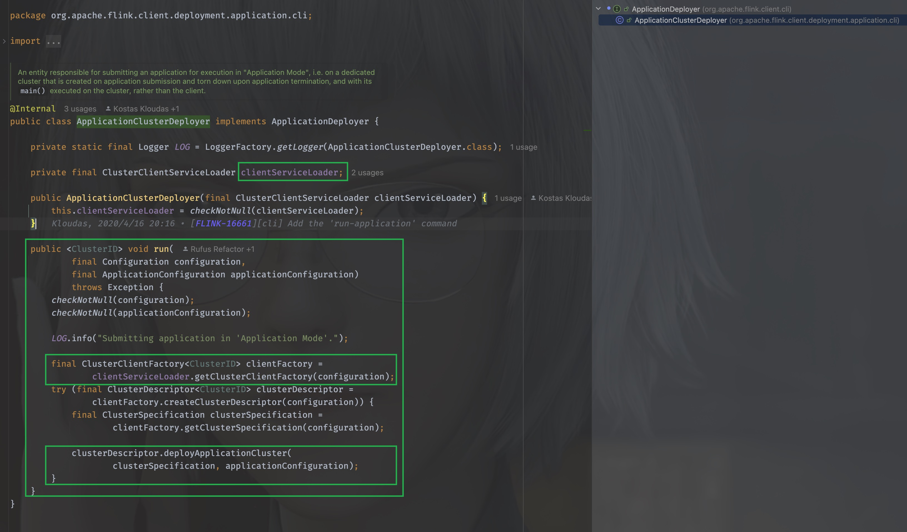
在run方法里，使用了clientServiceLoader进行类加载，当看到ServiceLoader的时候，DNA动了，这是JAVA的SPI机制，OK，那么我们看下这个clientServiceLoader是如何初始化的，就是要找到，它在什么时候创建并且被传入的。
我们找到clusterClientServiceLoader被初始化的地方，返回到CliFrontend，
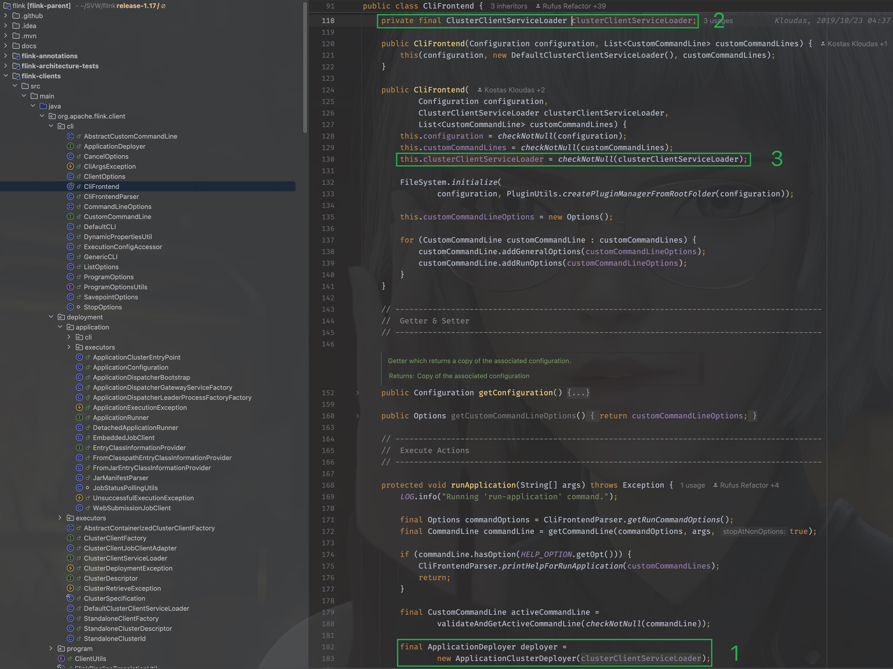
可以看到是在CliFrontend被构造的时候传入的，那么就找到它的构造方法：
public CliFrontend(Configuration configuration, List<CustomCommandLine> customCommandLines) {
this(configuration, new DefaultClusterClientServiceLoader(), customCommandLines);
}
其实就在上图中，可以看到传入的是org.apache.flink.client.deployment.DefaultClusterClientServiceLoader, 那么，当clientServiceLoader.getClusterClientFactory(configuration)在执行时，其实调用的是org.apache.flink.client.deployment.DefaultClusterClientServiceLoader#getClusterClientFactory方法。
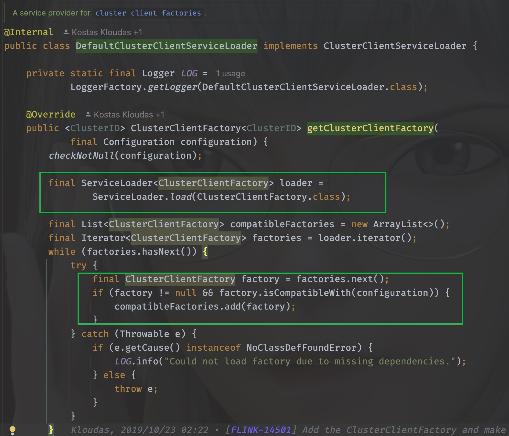
可以看到，它千辛万苦寻找的其实就是org.apache.flink.client.deployment.ClusterClientFactory的实现类，打开它的实现类可以发现一共有好几个
org.apache.flink.kubernetes.KubernetesClusterClientFactory
org.apache.flink.yarn.YarnClusterClientFactory
org.apache.flink.client.deployment.StandaloneClientFactory
用脚指头想都知道肯定是org.apache.flink.yarn.YarnClusterClientFactory,为什么呢？
因为他们的实现类都需要实现isCompatibleWith方法，只有YarnClusterClientFactory的方法里这个方法返回true，它解析的其实就是命令行传入的-t参数，当时我们传入的是yarn-application
./bin/flink run-application -t yarn-application ./examples/streaming/TopSpeedWindowing.jar
这个时候我们需要再回到org.apache.flink.client.deployment.application.cli.ApplicationClusterDeployer里，千万不要忘了来时的路，虽然很容易迷路。
同样的思路，我们很快能够定位到clusterDescriptor其实是org.apache.flink.yarn.YarnClusterDescriptor, 那么
clusterDescriptor.deployApplicationCluster(
clusterSpecification, applicationConfiguration)
执行的其实就是org.apache.flink.yarn.YarnClusterDescriptor#deployApplicationCluster
19.2.1. 总结
flowchart LR
CliFrontend.main --> CliFrontend.mainInternal --> CliFrontend.parseAndRun
CliFrontend.parseAndRun --> CliFrontend.runApplication --> ApplicationDeployer.run --> YarnClusterDescriptor.deployApplicationCluster
关于deployApplicationCluster的细节比较多，这里不作深入解析，只关注重要核心代码，尽量不干扰我们对于整个流程的理解
19.3. ApplicationMaster的启动
deployApplicationCluster会进行ApplicationMaster的启动
graph LR
deployApplicationCluster[deployApplicationCluster] --> deployInternal --> isReadyForDeployment
isReadyForDeployment --> checkYarnQueues --> startAppMaster
关于startAppmater
graph LR
初始化appContext --> resource[resource load] --> 将jobGraph暂存为文件 --> KRB[加载kerberos认证等配置文件]
KRB --> AMContainer[初始化AM Container context] --> AMContainerResources[上传AM Container文件]
--> 初始化ApplicationMasterEnv --> setApplicationNodeLabel --> setApplicationTags --> submitApplication
19.4. deployApplicationCluster
同样的，进入这个方法可以看到前面很多参数的校验以及初始化，忽略这些，我们直接进入关键代码
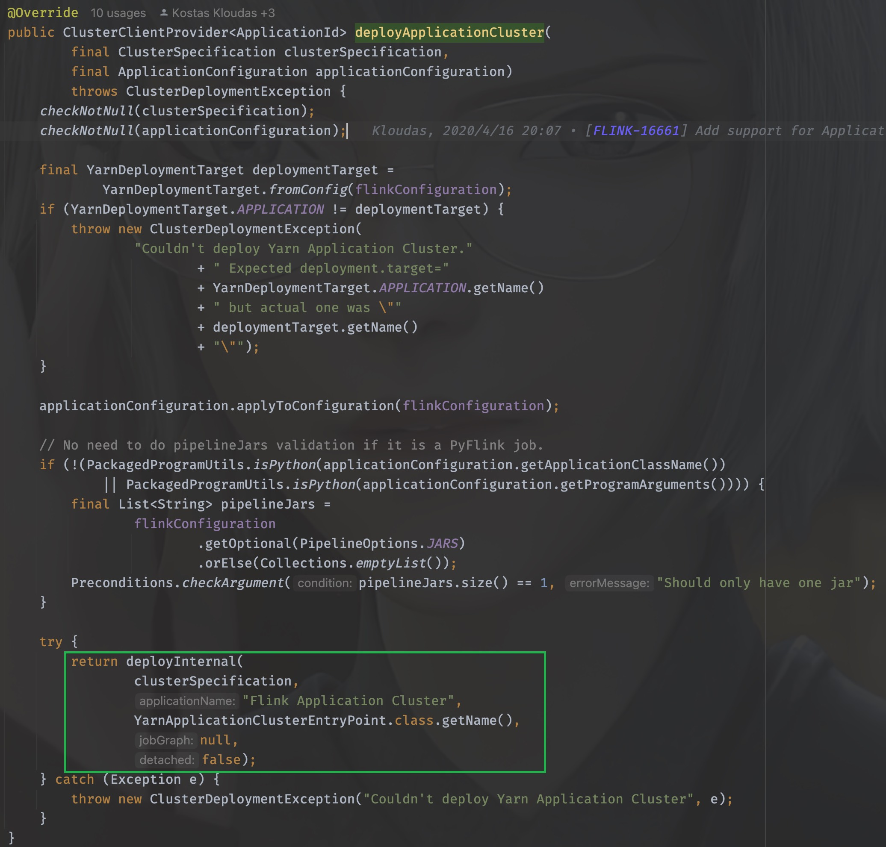
方法有详细的说明
Note
This method will block until the ApplicationMaster/JobManager have been deployed on YARN.
@param clusterSpecification Initial cluster specification for the Flink cluster to be deployed
@param applicationName name of the Yarn application to start
@param yarnClusterEntrypoint Class name of the Yarn cluster entry point.
@param jobGraph A job graph which is deployed with the Flink cluster, {@code null} if none
@param detached True if the cluster should be started in detached mode
注意到这个”Flink Application Cluster”没，当我们的任务不指定job name的时候，打开web ui的时候看到的默认就是它，除此之外，最核心的一个参数其实是(String yarnClusterEntrypoint), 这里传入的是YarnApplicationClusterEntryPoint.class.getName(), 其实这个deployInternal里面干的事儿就是启动ApplicationMaster/JobManager，当AM启动之后需要执行的入口类就是YarnApplicationClusterEntryPoint，不妨进入YarnApplicationClusterEntryPoint里看看都有些什么：
太好了！是main()方法，我们有救了！
同样地，配置参数配置及初始化我们都暂时忽略，直戳要害看重点，在main方法的最后：
YarnApplicationClusterEntryPoint yarnApplicationClusterEntrypoint =
new YarnApplicationClusterEntryPoint(configuration, program);
ClusterEntrypoint.runClusterEntrypoint(yarnApplicationClusterEntrypoint);
new了一下自己，并调用ClusterEntrypoint.runClusterEntrypoint，进入这个方法：
public static void runClusterEntrypoint(ClusterEntrypoint clusterEntrypoint) {
final String clusterEntrypointName = clusterEntrypoint.getClass().getSimpleName();
try {
clusterEntrypoint.startCluster();
} catch (ClusterEntrypointException e) {
LOG.error(
String.format("Could not start cluster entrypoint %s.", clusterEntrypointName),
e);
System.exit(STARTUP_FAILURE_RETURN_CODE);
}
int returnCode;
Throwable throwable = null;
try {
returnCode = clusterEntrypoint.getTerminationFuture().get().processExitCode();
} catch (Throwable e) {
throwable = ExceptionUtils.stripExecutionException(e);
returnCode = RUNTIME_FAILURE_RETURN_CODE;
}
LOG.info(
"Terminating cluster entrypoint process {} with exit code {}.",
clusterEntrypointName,
returnCode,
throwable);
System.exit(returnCode);
}
核心方法是：clusterEntrypoint.startCluster(); , 直接进入，我已经迫不及待看见它开始的地方了
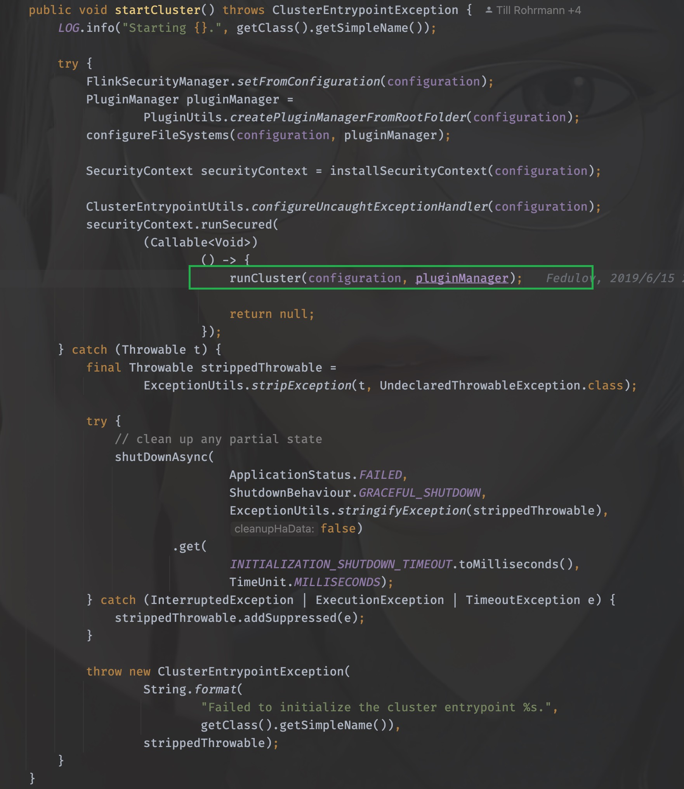
同样地，进入runCluster这个方法，接下来，就是有点迷惑人的地方了，迷宫开始了。
19.5. runCluster
runCluster没有返回值，所以该做的事情，在这个方法里就做完了，所以究竟做了哪些事情呢？
通过工厂类的命名可以猜到，需要创建dispatcher和resourceManager这两个组件，其实这两个组件也就是JobManager的核心组件，进入到这个工厂中，详细看看是如何创建的
19.5.1. DispatcherResourceManagerComponent
同样，戳进create方法，进入的是org.apache.flink.runtime.entrypoint.component.DispatcherResourceManagerComponentFactory这个工厂接口
它只有一个实现类就是org.apache.flink.runtime.entrypoint.component.DefaultDispatcherResourceManagerComponentFactory, 所以就看它的create方法即可
这个方法的方法体很长，同样，非核心的代码去掉暂时不看
什么？你哪知道哪些核心不核心？
这不好说呀，只能根据经验和方法命名来猜，如果你没猜错的话一定是猜对了。
@Override
public DispatcherResourceManagerComponent create(
Configuration configuration,
ResourceID resourceId,
Executor ioExecutor,
RpcService rpcService,
HighAvailabilityServices highAvailabilityServices,
BlobServer blobServer,
HeartbeatServices heartbeatServices,
DelegationTokenManager delegationTokenManager,
MetricRegistry metricRegistry,
ExecutionGraphInfoStore executionGraphInfoStore,
MetricQueryServiceRetriever metricQueryServiceRetriever,
FatalErrorHandler fatalErrorHandler)
throws Exception {
LeaderRetrievalService dispatcherLeaderRetrievalService = null;
LeaderRetrievalService resourceManagerRetrievalService = null;
WebMonitorEndpoint<?> webMonitorEndpoint = null;
ResourceManagerService resourceManagerService = null;
DispatcherRunner dispatcherRunner = null;
try {
dispatcherLeaderRetrievalService =
highAvailabilityServices.getDispatcherLeaderRetriever();
resourceManagerRetrievalService =
highAvailabilityServices.getResourceManagerLeaderRetriever();
final LeaderGatewayRetriever<DispatcherGateway> dispatcherGatewayRetriever =
new RpcGatewayRetriever<>(
rpcService,
DispatcherGateway.class,
DispatcherId::fromUuid,
new ExponentialBackoffRetryStrategy(
12, Duration.ofMillis(10), Duration.ofMillis(50)));
final LeaderGatewayRetriever<ResourceManagerGateway> resourceManagerGatewayRetriever =
new RpcGatewayRetriever<>(
rpcService,
ResourceManagerGateway.class,
ResourceManagerId::fromUuid,
new ExponentialBackoffRetryStrategy(
12, Duration.ofMillis(10), Duration.ofMillis(50)));
final ScheduledExecutorService executor =
WebMonitorEndpoint.createExecutorService(
configuration.getInteger(RestOptions.SERVER_NUM_THREADS),
configuration.getInteger(RestOptions.SERVER_THREAD_PRIORITY),
"DispatcherRestEndpoint");
final long updateInterval =
configuration.getLong(MetricOptions.METRIC_FETCHER_UPDATE_INTERVAL);
final MetricFetcher metricFetcher =
updateInterval == 0
? VoidMetricFetcher.INSTANCE
: MetricFetcherImpl.fromConfiguration(
configuration,
metricQueryServiceRetriever,
dispatcherGatewayRetriever,
executor);
webMonitorEndpoint =
restEndpointFactory.createRestEndpoint(
configuration,
dispatcherGatewayRetriever,
resourceManagerGatewayRetriever,
blobServer,
executor,
metricFetcher,
highAvailabilityServices.getClusterRestEndpointLeaderElectionService(),
fatalErrorHandler);
log.debug("Starting Dispatcher REST endpoint.");
webMonitorEndpoint.start();
final String hostname = RpcUtils.getHostname(rpcService);
resourceManagerService =
ResourceManagerServiceImpl.create(
resourceManagerFactory,
configuration,
resourceId,
rpcService,
highAvailabilityServices,
heartbeatServices,
delegationTokenManager,
fatalErrorHandler,
new ClusterInformation(hostname, blobServer.getPort()),
webMonitorEndpoint.getRestBaseUrl(),
metricRegistry,
hostname,
ioExecutor);
final HistoryServerArchivist historyServerArchivist =
HistoryServerArchivist.createHistoryServerArchivist(
configuration, webMonitorEndpoint, ioExecutor);
final DispatcherOperationCaches dispatcherOperationCaches =
new DispatcherOperationCaches(
configuration.get(RestOptions.ASYNC_OPERATION_STORE_DURATION));
final PartialDispatcherServices partialDispatcherServices =
new PartialDispatcherServices(
configuration,
highAvailabilityServices,
resourceManagerGatewayRetriever,
blobServer,
heartbeatServices,
() ->
JobManagerMetricGroup.createJobManagerMetricGroup(
metricRegistry, hostname),
executionGraphInfoStore,
fatalErrorHandler,
historyServerArchivist,
metricRegistry.getMetricQueryServiceGatewayRpcAddress(),
ioExecutor,
dispatcherOperationCaches);
log.debug("Starting Dispatcher.");
dispatcherRunner =
dispatcherRunnerFactory.createDispatcherRunner(
highAvailabilityServices.getDispatcherLeaderElectionService(),
fatalErrorHandler,
new HaServicesJobPersistenceComponentFactory(highAvailabilityServices),
ioExecutor,
rpcService,
partialDispatcherServices);
log.debug("Starting ResourceManagerService.");
resourceManagerService.start();
resourceManagerRetrievalService.start(resourceManagerGatewayRetriever);
dispatcherLeaderRetrievalService.start(dispatcherGatewayRetriever);
return new DispatcherResourceManagerComponent(
dispatcherRunner,
resourceManagerService,
dispatcherLeaderRetrievalService,
resourceManagerRetrievalService,
webMonitorEndpoint,
fatalErrorHandler,
dispatcherOperationCaches);
} catch (Exception exception) {
// clean up all started components
if (dispatcherLeaderRetrievalService != null) {
try {
dispatcherLeaderRetrievalService.stop();
} catch (Exception e) {
exception = ExceptionUtils.firstOrSuppressed(e, exception);
}
}
if (resourceManagerRetrievalService != null) {
try {
resourceManagerRetrievalService.stop();
} catch (Exception e) {
exception = ExceptionUtils.firstOrSuppressed(e, exception);
}
}
final Collection<CompletableFuture<Void>> terminationFutures = new ArrayList<>(3);
......
}
从上往下看，可以知道，在一系列组件被创建之后就一并执行了，这里创建了webMonitorEndpoint、resourceManagerService、resourceManagerRetrievalService、dispatcherLeaderRetrievalService，并且返回了一个DispatcherResourceManagerComponent
19.5.2. resourceManagerService的创建
来看看resourceManagerService是如何创建的，它的创建通过调用ResourceManagerServiceImpl的create方法进行创建，
resourceManagerService =
ResourceManagerServiceImpl.create(
resourceManagerFactory,
configuration,
resourceId,
rpcService,
highAvailabilityServices,
heartbeatServices,
delegationTokenManager,
fatalErrorHandler,
new ClusterInformation(hostname, blobServer.getPort()),
webMonitorEndpoint.getRestBaseUrl(),
metricRegistry,
hostname,
ioExecutor);
戳进去，会发现就是它自己，之后调用了start()方法进行启动
19.5.3. dispatcherRunner的创建
dispatcherRunner和resourceManagerService的创建在同一个地方
dispatcherRunner =
dispatcherRunnerFactory.createDispatcherRunner(
highAvailabilityServices.getDispatcherLeaderElectionService(),
fatalErrorHandler,
new HaServicesJobPersistenceComponentFactory(highAvailabilityServices),
ioExecutor,
rpcService,
partialDispatcherServices);
进入createDispatcherRunner方法，发现来到了org.apache.flink.runtime.dispatcher.runner.DispatcherRunnerFactory这个接口中，找一下他的实现类，发现只有一个实现类：org.apache.flink.runtime.dispatcher.runner.DefaultDispatcherRunnerFactory
找到它的createDispatcherRunner方法：
@Override
public DispatcherRunner createDispatcherRunner(
LeaderElectionService leaderElectionService,
FatalErrorHandler fatalErrorHandler,
JobPersistenceComponentFactory jobPersistenceComponentFactory,
Executor ioExecutor,
RpcService rpcService,
PartialDispatcherServices partialDispatcherServices)
throws Exception {
final DispatcherLeaderProcessFactory dispatcherLeaderProcessFactory =
dispatcherLeaderProcessFactoryFactory.createFactory(
jobPersistenceComponentFactory,
ioExecutor,
rpcService,
partialDispatcherServices,
fatalErrorHandler);
return DefaultDispatcherRunner.create(
leaderElectionService, fatalErrorHandler, dispatcherLeaderProcessFactory);
}
可以看到最后一行调用create来创建dispatcherRunner，它接收三个参数
leaderElectionService
fatalErrorHandler
dispatcherLeaderProcessFactory
根据参数名，自然可以想到，核心的参数是第一个和第三个，在继续深入之前，我们来看下这个leaderElectionService和dispatcherLeaderProcessFactory都是在什么时候创建和初始化的
19.5.3.1. leaderElectionService
OK，我们一路逆着往上，回到开始的地方，注意，从现在开始，和之前不同的是，我们需要一路回退。
如果把之前的动作比作是剥洋葱，一边剥一边流泪，那么现在的步骤就好似是包洋葱。
在create之前，这个leaderElectionService是由createDispatcherRunner的调用者传入的，也就是在刚刚看到的dispatcherRunner在创建的地方
dispatcherRunner =
dispatcherRunnerFactory.createDispatcherRunner(
highAvailabilityServices.getDispatcherLeaderElectionService(),
fatalErrorHandler,
new HaServicesJobPersistenceComponentFactory(highAvailabilityServices),
ioExecutor,
rpcService,
partialDispatcherServices);
这里传入了highAvailabilityServices.getDispatcherLeaderElectionService()
那么这个highAvailabilityServices又是什么呢？继续回退，找到它被初始化和传入的地方，它经过org.apache.flink.runtime.entrypoint.component.DefaultDispatcherResourceManagerComponentFactory#create方法被传入，这个create方法在两个地方被调用

我们一开始是从ClusterEntrypoint过来的，所以得回到这里面去
clusterComponent =
dispatcherResourceManagerComponentFactory.create(
configuration,
resourceId.unwrap(),
ioExecutor,
commonRpcService,
haServices,
blobServer,
heartbeatServices,
delegationTokenManager,
metricRegistry,
executionGraphInfoStore,
new RpcMetricQueryServiceRetriever(
metricRegistry.getMetricQueryServiceRpcService()),
this);
第5个参数就是我们要找到的highAvailabilityServices，继续找到它被初始化的地方，可以看到它在initializeServices(Configuration configuration, PluginManager pluginManager)方法中被创建
haServices = createHaServices(configuration, ioExecutor, rpcSystem);
initializeServices的调用也就在runCluster方法中，作用是在启动集群之前，初始化一系列参数配置
进入createHaServices(org.apache.flink.runtime.entrypoint.ClusterEntrypoint#createHaServices)方法，它调用了HighAvailabilityServicesUtils.createHighAvailabilityServices方法进行创建高可用服务
public static HighAvailabilityServices createHighAvailabilityServices(
Configuration configuration,
Executor executor,
AddressResolution addressResolution,
RpcSystemUtils rpcSystemUtils,
FatalErrorHandler fatalErrorHandler)
throws Exception {
HighAvailabilityMode highAvailabilityMode = HighAvailabilityMode.fromConfig(configuration);
switch (highAvailabilityMode) {
case NONE:
final Tuple2<String, Integer> hostnamePort = getJobManagerAddress(configuration);
final String resourceManagerRpcUrl =
rpcSystemUtils.getRpcUrl(
hostnamePort.f0,
hostnamePort.f1,
RpcServiceUtils.createWildcardName(
ResourceManager.RESOURCE_MANAGER_NAME),
addressResolution,
configuration);
final String dispatcherRpcUrl =
rpcSystemUtils.getRpcUrl(
hostnamePort.f0,
hostnamePort.f1,
RpcServiceUtils.createWildcardName(Dispatcher.DISPATCHER_NAME),
addressResolution,
configuration);
final String webMonitorAddress =
getWebMonitorAddress(configuration, addressResolution);
return new StandaloneHaServices(
resourceManagerRpcUrl, dispatcherRpcUrl, webMonitorAddress);
case ZOOKEEPER:
return createZooKeeperHaServices(configuration, executor, fatalErrorHandler);
case KUBERNETES:
return createCustomHAServices(
"org.apache.flink.kubernetes.highavailability.KubernetesHaServicesFactory",
configuration,
executor);
case FACTORY_CLASS:
return createCustomHAServices(configuration, executor);
default:
throw new Exception("Recovery mode " + highAvailabilityMode + " is not supported.");
}
}
这里分模式创建不同的Service，模式的区分由HighAvailabilityMode.fromConfig(configuration);解析得到，它解析的是flink-conf.yaml文件中的high-availability.type或者是high-availability,如果不作特别配置，默认是NONE
那么，这里得到的是org.apache.flink.runtime.highavailability.nonha.standalone.StandaloneHaServices
19.5.3.2. dispatcherLeaderProcessFactory
再来看看dispatcherLeaderProcessFactory是在什么地方被初始化和传入的，包洋葱🧅开始
首先来到了它的创建：
final DispatcherLeaderProcessFactory dispatcherLeaderProcessFactory =
dispatcherLeaderProcessFactoryFactory.createFactory(
jobPersistenceComponentFactory,
ioExecutor,
rpcService,
partialDispatcherServices,
fatalErrorHandler);
它由一个工厂的工厂进行创建，dispatcherLeaderProcessFactoryFactory是一个创建工厂的工厂类，那么找到它的赋值的地方，继续往上发现它是DefaultDispatcherRunnerFactory的构造参数,它的调用有三个地方，后两者都是在自己内部，第一个才是我们要找的
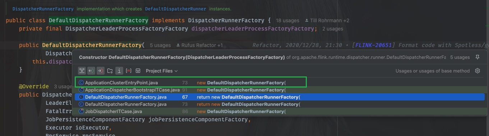
@Override
protected DispatcherResourceManagerComponentFactory
createDispatcherResourceManagerComponentFactory(final Configuration configuration) {
return new DefaultDispatcherResourceManagerComponentFactory(
new DefaultDispatcherRunnerFactory(
ApplicationDispatcherLeaderProcessFactoryFactory.create(
configuration, SessionDispatcherFactory.INSTANCE, program)),
resourceManagerFactory,
JobRestEndpointFactory.INSTANCE);
}
这里可以看到调用了ApplicationDispatcherLeaderProcessFactoryFactory的create方法进行创建，
ApplicationDispatcherLeaderProcessFactoryFactory.create(
configuration, SessionDispatcherFactory.INSTANCE, program))
第二个参数传入的是一个SessionDispatcherFactory
进入create方法，其实就是创建了一个自己：ApplicationDispatcherLeaderProcessFactoryFactory
传入的dispatcherFactory是刚刚得到的SessionDispatcherFactory，到这里，差不多工作都做好了，我们都只是得到了一些列工厂的接口，并没有调用它们的方法，那么一定有一个地方进行抽象地调用。
我们再到createDispatcherResourceManagerComponentFactory这个方法被调用的地方，只有一个调用的地方
在ClusterEntryPoint里
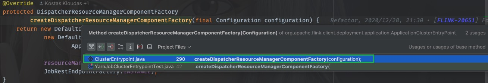
发现，又回到了我们之前去过的runCluster方法中
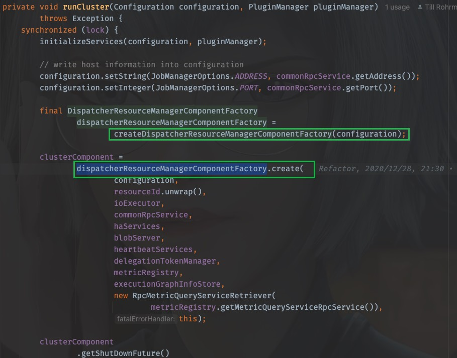
工厂在上面被创建，在下面被调用
同样的，进入create方法，实际执行是DefaultDispatcherResourceManagerComponentFactory.create，先前看到的dispatcherRunnerFactory其实就是
new DefaultDispatcherRunnerFactory(
ApplicationDispatcherLeaderProcessFactoryFactory.create(
configuration, SessionDispatcherFactory.INSTANCE, program))
当调用dispatcherRunnerFactory.createDispatcherRunner时，
dispatcherRunner =
dispatcherRunnerFactory.createDispatcherRunner(
highAvailabilityServices.getDispatcherLeaderElectionService(),
fatalErrorHandler,
new HaServicesJobPersistenceComponentFactory(highAvailabilityServices),
ioExecutor,
rpcService,
partialDispatcherServices);
我们应该去看DefaultDispatcherRunnerFactory的createDispatcherRunner方法
@Override
public DispatcherRunner createDispatcherRunner(
LeaderElectionService leaderElectionService,
FatalErrorHandler fatalErrorHandler,
JobPersistenceComponentFactory jobPersistenceComponentFactory,
Executor ioExecutor,
RpcService rpcService,
PartialDispatcherServices partialDispatcherServices)
throws Exception {
final DispatcherLeaderProcessFactory dispatcherLeaderProcessFactory =
dispatcherLeaderProcessFactoryFactory.createFactory(
jobPersistenceComponentFactory,
ioExecutor,
rpcService,
partialDispatcherServices,
fatalErrorHandler);
return DefaultDispatcherRunner.create(
leaderElectionService, fatalErrorHandler, dispatcherLeaderProcessFactory);
}
好家伙！回到了开头，此时已经知道了dispatcherLeaderProcessFactoryFactory是什么。
就是刚才看到的ApplicationDispatcherLeaderProcessFactoryFactory，
那么当调用createFactory的时候就是调用org.apache.flink.client.deployment.application.ApplicationDispatcherLeaderProcessFactoryFactory#createFactory
最后创建了一个SessionDispatcherLeaderProcessFactory
@Override
public DispatcherLeaderProcessFactory createFactory(
JobPersistenceComponentFactory jobPersistenceComponentFactory,
Executor ioExecutor,
RpcService rpcService,
PartialDispatcherServices partialDispatcherServices,
FatalErrorHandler fatalErrorHandler) {
final ApplicationDispatcherGatewayServiceFactory dispatcherServiceFactory =
new ApplicationDispatcherGatewayServiceFactory(
configuration,
dispatcherFactory,
program,
rpcService,
partialDispatcherServices);
return new SessionDispatcherLeaderProcessFactory(
dispatcherServiceFactory,
jobPersistenceComponentFactory,
ioExecutor,
fatalErrorHandler);
}
还记得吗？new ApplicationDispatcherGatewayServiceFactory传入的dispatcherFactory就是SessionDispatcherFactory.INSTANCE
那么，dispatcherLeaderProcessFactory其实就是SessionDispatcherLeaderProcessFactory
至此，创建dispatcherRunner需要的leaderElectionService和dispatcherLeaderProcessFactory都知道了，包洋葱结束。
再总结一下：
dispatcherRunnerFactory.createDispatcherRunner
leaderElectionService
StandaloneHaServices
dispatcherLeaderProcessFactory
SessionDispatcherLeaderProcessFactory
19.5.3.3. createAndStart
需要的都准备好了，我们进入create方法
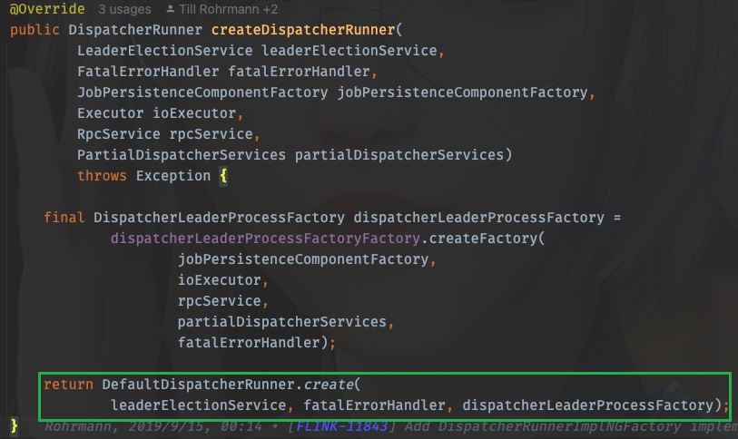
进入这个方法：
public static DispatcherRunner create(
LeaderElectionService leaderElectionService,
FatalErrorHandler fatalErrorHandler,
DispatcherLeaderProcessFactory dispatcherLeaderProcessFactory)
throws Exception {
final DefaultDispatcherRunner dispatcherRunner =
new DefaultDispatcherRunner(
leaderElectionService, fatalErrorHandler, dispatcherLeaderProcessFactory);
dispatcherRunner.start();
return dispatcherRunner;
}
可以看到，dispatcherRunner在这里创建也在这里启动
终于！
OHHHHHHHHHHHHHHHHH！（表情包）
19.5.4. 深入dispatcherRunner的启动
进入dispatcherRunner的start方法，
void start() throws Exception {
leaderElectionService.start(this);
}
这个leaderElectionService刚才我们已经知道了是StandaloneHaServices，那就去StandaloneHaServices中看看start()都做了啥
@Override
public void start(LeaderContender newContender) throws Exception {
if (contender != null) {
// Service was already started
throw new IllegalArgumentException(
"Leader election service cannot be started multiple times.");
}
contender = Preconditions.checkNotNull(newContender);
// directly grant leadership to the given contender
contender.grantLeadership(HighAvailabilityServices.DEFAULT_LEADER_ID);
}
这个contender就是刚才的DefaultDispatcherRunner，上面是参数校验，直接看最后一行，这里调用了grantLeadership()，那么应该看DefaultDispatcherRunner的grantLeadership方法，OK，我们回去，又要开始剥洋葱了
@Override
public void grantLeadership(UUID leaderSessionID) {
runActionIfRunning(
() -> {
LOG.info(
"{} was granted leadership with leader id {}. Creating new {}.",
getClass().getSimpleName(),
leaderSessionID,
DispatcherLeaderProcess.class.getSimpleName());
startNewDispatcherLeaderProcess(leaderSessionID);
});
}
这里使用lambda表达式调用了，startNewDispatcherLeaderProcess(leaderSessionID)，直接进入
private void startNewDispatcherLeaderProcess(UUID leaderSessionID) {
stopDispatcherLeaderProcess();
dispatcherLeaderProcess = createNewDispatcherLeaderProcess(leaderSessionID);
final DispatcherLeaderProcess newDispatcherLeaderProcess = dispatcherLeaderProcess;
FutureUtils.assertNoException(
previousDispatcherLeaderProcessTerminationFuture.thenRun(
newDispatcherLeaderProcess::start));
}
这里是1、先创建(createNewDispatcherLeaderProcess(leaderSessionID))2、再执行(newDispatcherLeaderProcess::start)
那就先看创建
private DispatcherLeaderProcess createNewDispatcherLeaderProcess(UUID leaderSessionID) {
final DispatcherLeaderProcess newDispatcherLeaderProcess =
dispatcherLeaderProcessFactory.create(leaderSessionID);
forwardShutDownFuture(newDispatcherLeaderProcess);
forwardConfirmLeaderSessionFuture(leaderSessionID, newDispatcherLeaderProcess);
return newDispatcherLeaderProcess;
}
这里调用了dispatcherLeaderProcessFactory的create方法，在前文已经知道，这个dispatcherLeaderProcessFactory由DefaultDispatcherRunner的构造方法传入，其实就是SessionDispatcherLeaderProcessFactory
那么我们直接看SessionDispatcherLeaderProcessFactory的create方法
从这里戳create方法进入接口类，ctrl+H找到实现类，戳SessionDispatcherLeaderProcessFactory进入
@Override
public DispatcherLeaderProcess create(UUID leaderSessionID) {
return SessionDispatcherLeaderProcess.create(
leaderSessionID,
dispatcherGatewayServiceFactory,
jobPersistenceComponentFactory.createJobGraphStore(),
jobPersistenceComponentFactory.createJobResultStore(),
ioExecutor,
fatalErrorHandler);
}
这里还需要传入一个dispatcherGatewayServiceFactory，由前文已经知道，它就是ApplicationDispatcherGatewayServiceFactory，而创建ApplicationDispatcherGatewayServiceFactory也需要一个dispatcherFactory，即是SessionDispatcherFactory.INSTANCE
继续进入SessionDispatcherLeaderProcess.create
public static SessionDispatcherLeaderProcess create(
UUID leaderSessionId,
DispatcherGatewayServiceFactory dispatcherFactory,
JobGraphStore jobGraphStore,
JobResultStore jobResultStore,
Executor ioExecutor,
FatalErrorHandler fatalErrorHandler) {
return new SessionDispatcherLeaderProcess(
leaderSessionId,
dispatcherFactory,
jobGraphStore,
jobResultStore,
ioExecutor,
fatalErrorHandler);
}
发现其实就是创建了一个自己：SessionDispatcherLeaderProcess，现在回去，现在只是分析了第一步”创建“，下一步是”执行“，回到
org.apache.flink.runtime.dispatcher.runner.DefaultDispatcherRunner#startNewDispatcherLeaderProcess方法中，目光聚焦于：newDispatcherLeaderProcess::start
戳start进入，发现是DispatcherLeaderProcess接口类
interface DispatcherLeaderProcess extends AutoCloseableAsync {
void start();
UUID getLeaderSessionId();
CompletableFuture<DispatcherGateway> getDispatcherGateway();
CompletableFuture<String> getLeaderAddressFuture();
CompletableFuture<ApplicationStatus> getShutDownFuture();
}
那么我们应该去实现类org.apache.flink.runtime.dispatcher.runner.SessionDispatcherLeaderProcess中一探究竟：
找到它的start()方法，发现没有，只能去它的父类中找start()方法，父类是AbstractDispatcherLeaderProcess
@Override
public final void start() {
runIfStateIs(State.CREATED, this::startInternal);
}
又是一个lambda表达式调用，进入startInternal
private void startInternal() {
log.info("Start {}.", getClass().getSimpleName());
state = State.RUNNING;
onStart();
}
进入onStart();发现是一个抽象方法
protected abstract void onStart();
那这个时候就要去看子类了，回到SessionDispatcherLeaderProcess中找到onStart()方法
@Override
protected void onStart() {
startServices();
onGoingRecoveryOperation =
createDispatcherBasedOnRecoveredJobGraphsAndRecoveredDirtyJobResults();
}
两个方法，一个一个看，先看startServices();
private void startServices() {
try {
jobGraphStore.start(this);
} catch (Exception e) {
throw new FlinkRuntimeException(
String.format(
"Could not start %s when trying to start the %s.",
jobGraphStore.getClass().getSimpleName(), getClass().getSimpleName()),
e);
}
}
这一看，和jobGraph有关，先忽略
再看createDispatcherBasedOnRecoveredJobGraphsAndRecoveredDirtyJobResults()
private CompletableFuture<Void>
createDispatcherBasedOnRecoveredJobGraphsAndRecoveredDirtyJobResults() {
final CompletableFuture<Collection<JobResult>> dirtyJobsFuture =
CompletableFuture.supplyAsync(this::getDirtyJobResultsIfRunning, ioExecutor);
return dirtyJobsFuture
.thenApplyAsync(
dirtyJobs ->
this.recoverJobsIfRunning(
dirtyJobs.stream()
.map(JobResult::getJobId)
.collect(Collectors.toSet())),
ioExecutor)
.thenAcceptBoth(dirtyJobsFuture, this::createDispatcherIfRunning)
.handle(this::onErrorIfRunning);
}
又是lambda调用，进入this::createDispatcherIfRunning
private void createDispatcherIfRunning(
Collection<JobGraph> jobGraphs, Collection<JobResult> recoveredDirtyJobResults) {
runIfStateIs(State.RUNNING, () -> createDispatcher(jobGraphs, recoveredDirtyJobResults));
}
同lambda，进入createDispatcher(jobGraphs, recoveredDirtyJobResults)
private void createDispatcher(
Collection<JobGraph> jobGraphs, Collection<JobResult> recoveredDirtyJobResults) {
final DispatcherGatewayService dispatcherService =
dispatcherGatewayServiceFactory.create(
DispatcherId.fromUuid(getLeaderSessionId()),
jobGraphs,
recoveredDirtyJobResults,
jobGraphStore,
jobResultStore);
completeDispatcherSetup(dispatcherService);
}
终于，在这里调用了dispatcherGatewayServiceFactory的create方法，这个dispatcherGatewayServiceFactory就是前文已经探究过的ApplicationDispatcherGatewayServiceFactory，
我们戳create进入，发现来到的是抽象类org.apache.flink.runtime.dispatcher.runner.AbstractDispatcherLeaderProcess中，来到了一个内部接口
public interface DispatcherGatewayServiceFactory {
DispatcherGatewayService create(
DispatcherId dispatcherId,
Collection<JobGraph> recoveredJobs,
Collection<JobResult> recoveredDirtyJobResults,
JobGraphWriter jobGraphWriter,
JobResultStore jobResultStore);
}
ctrl+H找到实现类，找到create方法
@Override
public AbstractDispatcherLeaderProcess.DispatcherGatewayService create(
DispatcherId fencingToken,
Collection<JobGraph> recoveredJobs,
Collection<JobResult> recoveredDirtyJobResults,
JobGraphWriter jobGraphWriter,
JobResultStore jobResultStore) {
final List<JobID> recoveredJobIds = getRecoveredJobIds(recoveredJobs);
final Dispatcher dispatcher;
try {
dispatcher =
dispatcherFactory.createDispatcher(
rpcService,
fencingToken,
recoveredJobs,
recoveredDirtyJobResults,
(dispatcherGateway, scheduledExecutor, errorHandler) ->
new ApplicationDispatcherBootstrap(
application,
recoveredJobIds,
configuration,
dispatcherGateway,
scheduledExecutor,
errorHandler),
PartialDispatcherServicesWithJobPersistenceComponents.from(
partialDispatcherServices, jobGraphWriter, jobResultStore));
} catch (Exception e) {
throw new FlinkRuntimeException("Could not create the Dispatcher rpc endpoint.", e);
}
dispatcher.start();
return DefaultDispatcherGatewayService.from(dispatcher);
}
这里调用了dispatcherFactory.createDispatcher()来创建dispatcher，那么需要弄清楚这个dispatcherFactory是什么
一路按照调用链返回，先是来到了ApplicationDispatcherLeaderProcessFactoryFactory中
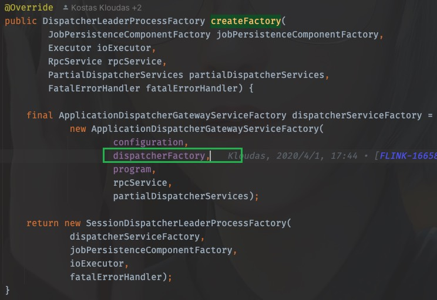
前文已经探究过，这里的dispatcherFactory就是SessionDispatcherFactory.INSTANCE
所以，这里dispatcherFactory.createDispatcher的调用，应该看SessionDispatcherFactory.INSTANCE中的createDispatcher方法，同样的，戳createDispatcher进去，ctrl+H也能找到实现类，从而找到createDispatcher方法
@Override
public StandaloneDispatcher createDispatcher(
RpcService rpcService,
DispatcherId fencingToken,
Collection<JobGraph> recoveredJobs,
Collection<JobResult> recoveredDirtyJobResults,
DispatcherBootstrapFactory dispatcherBootstrapFactory,
PartialDispatcherServicesWithJobPersistenceComponents
partialDispatcherServicesWithJobPersistenceComponents)
throws Exception {
// create the default dispatcher
return new StandaloneDispatcher(
rpcService,
fencingToken,
recoveredJobs,
recoveredDirtyJobResults,
dispatcherBootstrapFactory,
DispatcherServices.from(
partialDispatcherServicesWithJobPersistenceComponents,
JobMasterServiceLeadershipRunnerFactory.INSTANCE,
CheckpointResourcesCleanupRunnerFactory.INSTANCE));
}
进入StandaloneDispatcher，发现继承自org.apache.flink.runtime.dispatcher.Dispatcher
到这里已经知道dispatcherFactory.createDispatcher创建的dispatcher即是StandaloneDispatcher
当调用dispatcher.start()时，运行的即是StandaloneDispatcher的start方法，而StandaloneDispatcher并没有这个方法体，所以方法来自于父类org.apache.flink.runtime.dispatcher.Dispatcher,
OK，戳一下dispatcher.start()，发现来到的是org.apache.flink.runtime.rpc.RpcEndpoint，并不是Dispatcher，
19.5.4.1. 启动JobMaster
其实这里使用的是RPC调用，应该去看Dispatcher的onStart()方法
@Override
public void onStart() throws Exception {
try {
startDispatcherServices();
} catch (Throwable t) {
final DispatcherException exception =
new DispatcherException(
String.format("Could not start the Dispatcher %s", getAddress()), t);
onFatalError(exception);
throw exception;
}
startCleanupRetries();
startRecoveredJobs();
this.dispatcherBootstrap =
this.dispatcherBootstrapFactory.create(
getSelfGateway(DispatcherGateway.class),
this.getRpcService().getScheduledExecutor(),
this::onFatalError);
}
一个一个看之后，
startDispatcherServices()这个方法进行metrics的注册
startCleanupRetries()进行metrics的清理
startRecoveredJobs()运行job
private void startRecoveredJobs() {
for (JobGraph recoveredJob : recoveredJobs) {
runRecoveredJob(recoveredJob);
}
recoveredJobs.clear();
}
runRecoveredJob
private void runRecoveredJob(final JobGraph recoveredJob) {
checkNotNull(recoveredJob);
initJobClientExpiredTime(recoveredJob);
try {
runJob(createJobMasterRunner(recoveredJob), ExecutionType.RECOVERY);
} catch (Throwable throwable) {
onFatalError(
new DispatcherException(
String.format(
"Could not start recovered job %s.", recoveredJob.getJobID()),
throwable));
}
}
这里开始运行job
runJob(createJobMasterRunner(recoveredJob), ExecutionType.RECOVERY);
先进入createJobMasterRunner(recoveredJob)
private JobManagerRunner createJobMasterRunner(JobGraph jobGraph) throws Exception {
Preconditions.checkState(!jobManagerRunnerRegistry.isRegistered(jobGraph.getJobID()));
return jobManagerRunnerFactory.createJobManagerRunner(
jobGraph,
configuration,
getRpcService(),
highAvailabilityServices,
heartbeatServices,
jobManagerSharedServices,
new DefaultJobManagerJobMetricGroupFactory(jobManagerMetricGroup),
fatalErrorHandler,
System.currentTimeMillis());
}
这里的jobManagerRunnerFactory是什么呢？有两种办法可以弄清楚，一是顺着调用链路一步一步回退，找到它被创建是赋值的地方，还可以是直接进入createJobManagerRunner，找到实现类，根据类名称进行判断
这里直接进入createJobManagerRunner，找到实现类，发现只有org.apache.flink.runtime.dispatcher.JobMasterServiceLeadershipRunnerFactory
这个时候可以看到它返回了一个JobMasterServiceLeadershipRunner
再回到runJob方法中，第一步就是启动的刚才得到的JobMasterServiceLeadershipRunner
至此，JobManager启动了！
进入start()方法，找到实现类的start()
@Override
public void start() throws Exception {
LOG.debug("Start leadership runner for job {}.", getJobID());
leaderElectionService.start(this);
}
事情变得熟悉起来，再进leaderElectionService.start(this)，其实就是需要找Contender并分析grantLeadership方法的执行
那么直接找到LeaderContender的实现类，刚才得到的JobMasterServiceLeadershipRunner也是它的实现类，那么找到grantLeadership方法，注意这里的runIfStateRunning运行的是一个线程
@Override
public void grantLeadership(UUID leaderSessionID) {
runIfStateRunning(
() -> startJobMasterServiceProcessAsync(leaderSessionID),
"starting a new JobMasterServiceProcess");
}
进入startJobMasterServiceProcessAsync(leaderSessionID)
@GuardedBy("lock")
private void startJobMasterServiceProcessAsync(UUID leaderSessionId) {
sequentialOperation =
sequentialOperation.thenRun(
() ->
runIfValidLeader(
leaderSessionId,
ThrowingRunnable.unchecked(
() ->
verifyJobSchedulingStatusAndCreateJobMasterServiceProcess(
leaderSessionId)),
"verify job scheduling status and create JobMasterServiceProcess"));
handleAsyncOperationError(sequentialOperation, "Could not start the job manager.");
}
进入verifyJobSchedulingStatusAndCreateJobMasterServiceProcess(leaderSessionId)，
@GuardedBy("lock")
private void verifyJobSchedulingStatusAndCreateJobMasterServiceProcess(UUID leaderSessionId)
throws FlinkException {
try {
if (jobResultStore.hasJobResultEntry(getJobID())) {
jobAlreadyDone(leaderSessionId);
} else {
createNewJobMasterServiceProcess(leaderSessionId);
}
} catch (IOException e) {
throw new FlinkException(
String.format(
"Could not retrieve the job scheduling status for job %s.", getJobID()),
e);
}
}
进入createNewJobMasterServiceProcess(leaderSessionId)
@GuardedBy("lock")
private void createNewJobMasterServiceProcess(UUID leaderSessionId) throws FlinkException {
Preconditions.checkState(jobMasterServiceProcess.closeAsync().isDone());
LOG.info(
"{} for job {} was granted leadership with leader id {}. Creating new {}.",
getClass().getSimpleName(),
getJobID(),
leaderSessionId,
JobMasterServiceProcess.class.getSimpleName());
jobMasterServiceProcess = jobMasterServiceProcessFactory.create(leaderSessionId);
forwardIfValidLeader(
leaderSessionId,
jobMasterServiceProcess.getJobMasterGatewayFuture(),
jobMasterGatewayFuture,
"JobMasterGatewayFuture from JobMasterServiceProcess");
forwardResultFuture(leaderSessionId, jobMasterServiceProcess.getResultFuture());
confirmLeadership(leaderSessionId, jobMasterServiceProcess.getLeaderAddressFuture());
}
进入jobMasterServiceProcessFactory.create(leaderSessionId)，找到实现类，就一个org.apache.flink.runtime.jobmaster.factories.DefaultJobMasterServiceProcessFactory
找到create方法
@Override
public JobMasterServiceProcess create(UUID leaderSessionId) {
return new DefaultJobMasterServiceProcess(
jobId,
leaderSessionId,
jobMasterServiceFactory,
cause -> createArchivedExecutionGraph(JobStatus.FAILED, cause));
}
进入DefaultJobMasterServiceProcess，
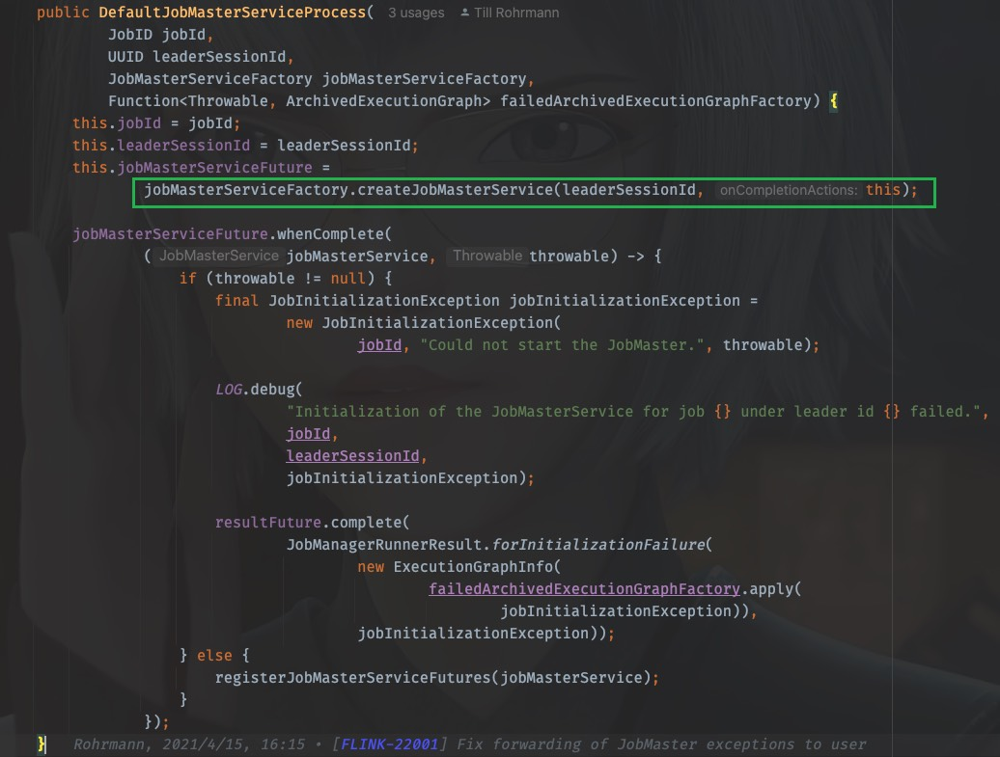
这里藏得比较隐蔽，我们需要看jobMasterServiceFactory.createJobMasterService(leaderSessionId, this)
戳进去同样是来到了接口类，我们找到实现类，就一个org.apache.flink.runtime.jobmaster.factories.DefaultJobMasterServiceFactory
找到createJobMasterService方法：
@Override
public CompletableFuture<JobMasterService> createJobMasterService(
UUID leaderSessionId, OnCompletionActions onCompletionActions) {
return CompletableFuture.supplyAsync(
FunctionUtils.uncheckedSupplier(
() -> internalCreateJobMasterService(leaderSessionId, onCompletionActions)),
executor);
}
同样是lambda表达式调用，进入internalCreateJobMasterService(leaderSessionId, onCompletionActions)
private JobMasterService internalCreateJobMasterService(
UUID leaderSessionId, OnCompletionActions onCompletionActions) throws Exception {
final JobMaster jobMaster =
new JobMaster(
rpcService,
JobMasterId.fromUuidOrNull(leaderSessionId),
jobMasterConfiguration,
ResourceID.generate(),
jobGraph,
haServices,
slotPoolServiceSchedulerFactory,
jobManagerSharedServices,
heartbeatServices,
jobManagerJobMetricGroupFactory,
onCompletionActions,
fatalErrorHandler,
userCodeClassloader,
shuffleMaster,
lookup ->
new JobMasterPartitionTrackerImpl(
jobGraph.getJobID(), shuffleMaster, lookup),
new DefaultExecutionDeploymentTracker(),
DefaultExecutionDeploymentReconciler::new,
BlocklistUtils.loadBlocklistHandlerFactory(
jobMasterConfiguration.getConfiguration()),
initializationTimestamp);
jobMaster.start();
return jobMaster;
}
OHHHHHHHHHH!
这里找到了JobMaster！创建JobMaster并启动它！
TODO: 后续TM的启动运行